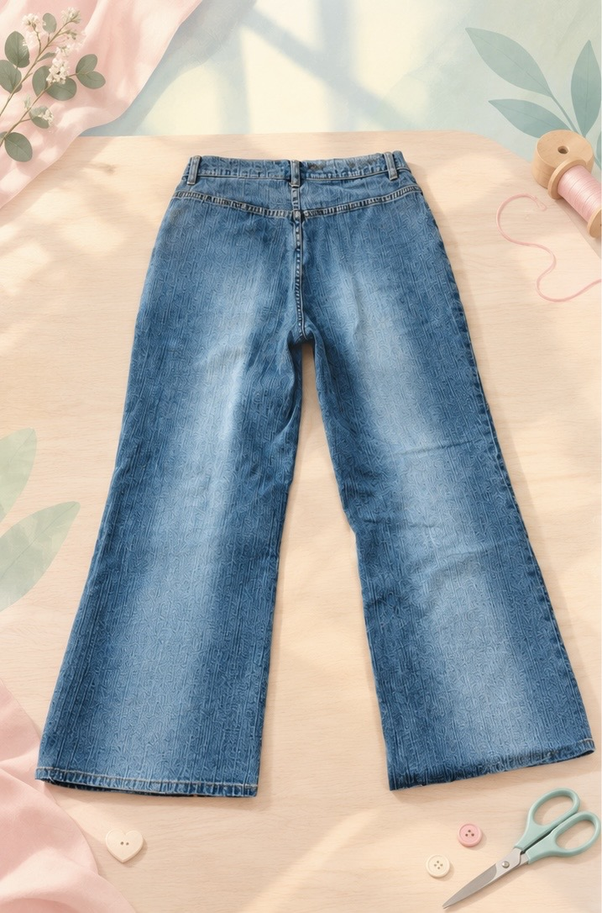

01. До кастомизации
Исходная вещь.
Передвигая ползунок, посмотри, как вещь получает новую жизнь.
Потяни ползунок влево или вправо.


Каждая вещь может получить новый дизайн и собственную историю.
Исходная вещь.

Новый дизайн и новый характер.

Вещи заслуживают второго шанса.